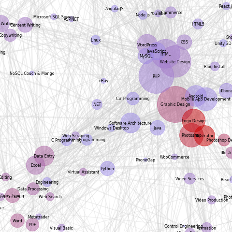

Job Market
Freelance market is huge. There are thousands and thousands posted online jobs. It's easy to get lost. Or maybe, you are looking to develop new skill but want to avoid oversaturated jobs. This is where map of freelance universe can help you make a decision.
Size of the bubble shows how many jobs offers related to particular skills. Skills are organized in a relation groups. You will find 'Web Design','HTML', 'CSS' and 'PHP' very close to each other. Thickness of the link shows how closely related two skill one to another.
Color of the bubble shows market saturation. Red color of the bubble indicates that there are many freelancer competing for the order. You should stay away from these skills or expect high level of competition for each order.
Main programming language is Python
First step is to scrape web page using request and time libraries. Next step is to format saved web pages to dataframe format using Regex, BeautifulSoup and pandas.
Final step is to plot map using networkx and matplotlib libraries.
Python code to build chart shown bellow:
# import libraries
import requests
import time
from os import mkdir
import re
from bs4 import BeautifulSoup
import pandas as pd
# set-up
base_url = 'https://www.freelancer.com/jobs/'
headers = {"User-Agent": "Mozilla/5.0 (Macintosh; Intel Mac OS X 10.14; rv:66.0) Gecko/20100101 Firefox/66.0",
"Accept": "text/html,application/xhtml+xml,application/xml;q=0.9,*/*;q=0.8", "Accept-Language": "en-US,en;q=0.5",
"Accept-Encoding": "gzip, deflate", "DNT": "1", "Connection": "close", "Upgrade-Insecure-Requests": "1"}
response = requests.get(base_url, headers=headers)
print(f'response status: {response.status_code}')
!mkdir pages
# get number of pages
soup = BeautifulSoup(response.content, 'html.parser')
jobs_number = soup.find(id='total-results')
print('parsed from page:', jobs_number.get_text())
pages_number = int(int(jobs_number.get_text().replace(',','')) / 50)
print('number of pages:', pages_number)
# initiate custom functions
def clean_parse(parse):
regex = '\w.+'
clean_text = ''
for text_block in re.findall(regex, parse):
clean_text += text_block + ' '
return clean_text
print('custom function "clean_parse" ready')
# scrape pages from web to local files
for page in range(1, pages_number*0+100):
if page == 1:
url = base_url
else:
url = base_url + str(page)
# request html page
response = requests.get(url, headers=headers)
time.sleep(3)
print(f'scraping from {url} {response.status_code} ... page {page} out of {pages_number}')
with open('pages/page' + str(page) + '.html', 'wb') as f:
f.write(response.content)
# prepare variables
jobs = {}
tags = []
duplicates = 0 # count number of duplicates in job title for debug
# start reading files
for page in range(1, pages_number * 0 + 100):
with open('pages/page' + str(page) + '.html') as f:
html = f.read()
soup = BeautifulSoup(html, 'html.parser')
# get main block (div) from html page with jobs
jobs_parse = soup.find(id='project-list')
jobs_section = jobs_parse.find_all('div', class_='JobSearchCard-item')
# iterate over jobs
print(f'found {len(jobs_section)} jobs at page {page}')
for job in jobs_section:
job_title = clean_parse(job.find('a').text)
#print('title:', job_title)
job_desc = clean_parse(job.find('p', class_='JobSearchCard-primary-description').text)
#print(job_desc)
# collect all tags for each job
job_tags = []
tags_parse = job.find_all('a', class_='JobSearchCard-primary-tagsLink')
for tag in tags_parse:
tag_name = tag.text
job_tags.append(tag_name)
tags.append(tag_name)
#print(job_tags)
# get number of bids
if job.find('div', class_='JobSearchCard-secondary-entry') != None:
bids_parse = job.find('div', class_='JobSearchCard-secondary-entry').text
bids = int(re.search('(\d+)\s', bids_parse).group(1))
# check for jobs duplicates
if job_title in jobs:
duplicates += 1
print(f'duplicate {duplicates} found: {job_title}')
job_title += str(duplicates)
# populate jobs disctionary
jobs[job_title] = [job_desc, job_tags, bids]
# create DataFrame 'jobs' and Series 'tags' in set format
jobs_df = pd.DataFrame.from_dict(jobs, orient='index', columns=['desc', 'tags', 'bids'])
# create Series with unique list of tags and count
tags_S = pd.Series(tags).value_counts()
# count bids for each tag
bids_count = {} # dict for { key(tag) : value(bids) }
for tag in tags_S.index:
#print(tag)
tag_bid_count = 0
for job in jobs_df.index:
if tag in jobs_df['tags'][job]:
tag_bid_count += jobs_df['bids'][job]
bids_count[tag] = tag_bid_count
bids_S = pd.Series(bids_count)
# combine to DataFrame
tags_df = pd.concat([tags_S, bids_S], axis=1)
tags_df.columns = ['orders', 'bids']
tags_df['bpo'] = tags_df['bids'] / tags_df['orders'] + 0.5
tags_df = tags_df.astype({'bpo': 'int16'})
tags_df = tags_df[tags_df.orders > tags_df.quantile(q=0.25, axis=1)]
# define custom function to count pairs
groups = jobs_df.tags.values
def count_pairs(pair):
count = 0
for group in groups:
if pair.issubset(group):
count += 1
return count
# populate dict with pairs count and frame to edges_df
pairs_dict = {}
tags_number = len(tags_df.index)
for i in range(tags_number):
print(i)
for j in range(tags_number):
if i == j:
pass
else:
t1, t2 = tags_df.index[i], tags_df.index[j]
if count_pairs({t1,t2}) == 0:
pass
else:
pairs_dict[t1,t2] = count_pairs({t1,t2})
pairs_df = pd.DataFrame.from_dict(pairs_dict, orient='index', columns=['pairs'])
import networkx as nx
import matplotlib.pyplot as plt
import matplotlib.colors as mcolors
G = nx.Graph()
#G.add_nodes_from(tags_df.index.values)
for tag, value in tags_df.iterrows():
G.add_nodes_from([(tag, {'color': value[2]})])
nodes = G.nodes
c = tags_df.bpo.values.copy()
colors = (c - c.min()) / (c.max() - c.min())
cmap = mcolors.LinearSegmentedColormap.from_list('', ['#9999FF', '#CC0000'])
#colors = [mapping[G.node[n]['color']] for n in nodes]
for pair, value in pairs_df.iterrows():
t1, t2, w = pair[0], pair[1], value.values[0] / 300
G.add_weighted_edges_from([(t1, t2, w)])
plt.subplots(figsize=[20,30])
pos = nx.spring_layout(G, seed=6)
nx.draw_networkx_nodes(G, pos, alpha=0.5,
node_size=tags_df.orders.values*5, cmap=cmap,
node_color=colors)
# node_color=normed_data**2)
nx.draw_networkx_edges(G, pos, width=pairs_df.pairs.values**0.5, alpha=0.3, edge_color='#ccc')
nx.draw_networkx_labels(G, pos, font_size=8, font_family='sans-serif', font_weight='light')
ax = plt.gca()
ax.margins(0.08)
plt.axis('off')
plt.tight_layout()
plt.show()Thank you for viewing my project. Any comment, suggestion, please adress to me by email bellow.
{kind=link}